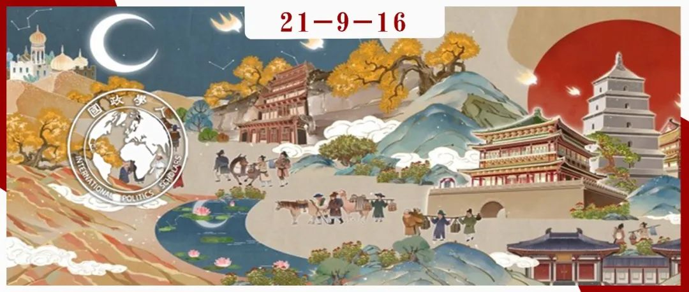

收录于合集
#丝绸之路 1 个
#中国 1 个

作品简介
作者： Lina Benabdallah，维克森林大学政治和国际事务助理教授。
编译： 张曼娜（国政学人编译员，南京大学国际关系研究院硕士研究生）
来源： Benabdallah, Lina. (2020). Spanning Thousands of Miles and Years: Political Nostalgia and China’s Revival of the Silk Road. International Studies Quarterly. 65. 10.1093/isq/sqaa080.
归档： 《国际关系前沿》2021年第9期，总第36期。

内容提要
近十年来，国际关系研究越来越关注记忆（memory）、创伤（trauma）、羞耻（shame）的政治，但较少关注把过去的积极经验政治工具化。的确，国际关系理论鲜有涉及怀旧（nostalgia）的概念及其在外交政策制定中的地位，尽管它有可能提供一个强大的理论透镜来解释权力力量的互动。站在时间和空间、时间和情感、过去和现在的交叉点上，政治怀旧允许国家领导人在时间上来回穿梭，回到过去，不是为了怀旧，而是为了对繁荣未来的承诺。本文考察了中国政府对古丝绸之路的怀旧式借用，以便将中国新的大战略、新丝绸之路与包容和繁荣的理念联系起来。重提15世纪中国航海家郑和的故事，通过骆驼商队穿越沙丘的故事和图像重建他的航海历史，便是政治怀旧的例证。
文章导读
我看不出未来有什么吸引我的东西;现在唯一能吸引我的就是回忆过去，而我所讲的那段时间的回忆，既真实又生动，常常使我在不幸中心满意足地生活着。
——卢梭《忏悔录》
历史是我们最好的老师。古丝绸之路的辉煌历程告诉我们，地理上的距离并非不可逾越的。只要我们彼此迈出勇敢的第一步，就能走出一条友谊之路、共同发展之路、和平之路、和谐之路、美好未来之路。
——习近平，2017年
01
引言
在2020年7月发布的一份中国官方媒体视频中，习近平主席讲述了十五世纪明朝航海家郑和的故事。视频的最后将“新丝绸之路”解释为郑和在航行中倡导的友谊与和谐价值观的延续。
本文将探讨的一系列问题是 ：为什么在习近平主席关于中国与世界关系的未来的讲话中，我们看到了对过去的转向?为什么是郑和而非历史上的另一个人物在中国的外交政策话语中复活，为什么是现在而不是十年前?更广泛地说，在中国关于其全球政治地位的叙述中，积极的怀旧故事的作用是什么?在中国的全球秩序观中，“其他地方”(如马六甲、三宝朗或蒙巴萨)的作用是什么？
本文着眼于积极的怀旧诱因及其在塑造乐观未来观叙事过程中的政治控制，分为四个部分展开：首先，作者将怀旧的概念置于政治研究中，在国际关系研究关注消极过去的影响的传统基础上，增加了对过去积极经验的工具化的分析。其次，本文构建了一个政治怀旧的三个定义要素和条件的框架：无法回到原处的条件（如明朝或前大都市上海）、线性和非线性时间取向的混合以及情感诱因。第三部分，作者考察了中国的国家叙事，通过讨论新丝绸之路在中国全球秩序远景中的作用，说明怀旧的空间、时间和情感维度是产生全球秩序愿景的载体。第四部分，作者利用理论框架中的要素，对中国“新丝绸之路”品牌材料进行了分析。
02
怀旧与政治
人文社科对怀旧及其影响的研究主要集中在悲观观点上，例如政治学研究更多关注诸如羞辱、愤怒或羞耻等负面情绪及国家领导人对这些情绪的民族主义和民粹主义的利用，然而作者认为，积极的怀旧经历和愉快的感情也可以作为政治怀旧工具。
政治怀旧是一种混合多样的概念，一方面可以被用于构建一个关于失控的当下的杞人忧天式的观点——回到一个更好的过去，特朗普演讲中的“让美国再次伟大”即是例证。另一方面，政治怀旧可以塑造对未来的乐观前景。在中国，利用图像和话语重建对过去的记忆，是新丝绸之路品牌化的重要组成部分，也是中国对国际秩序的愿景品牌化的重要组成部分。在对丝绸之路的论述中还隐含着一个承诺，即在共同利益与和谐基础上提供一个更公平、包容的全球秩序。
03
在时间、空间与情感的交叉点：怀旧与国际关系
怀旧包含三个维度：空间、时间与情感，三者相互关联，展示了政治怀旧如何被运用并通过线性和非线性的方式将过去的叙事与未来（的全球秩序）联系起来。
首先，政治怀旧需要空间因素：一个过去的“家”或最初的“地方”，它不可复制，只能通过话语重建。怀旧更多的是一种对过去的渴望，当记忆中的家园无法复制和找回时，怀旧的内容便从物质转向了时空状态，怀旧的政治工具化也就成为可能。
其次，政治怀旧的第二核心要素是时间。怀旧的时间机制允许“借用”并整合过去的图像、故事与映射，以供现在和未来使用。政治怀旧带来的多向时间运动既有周期性（中国的国家复兴），也有线性（从过去到未来的发展）。作者在这里引入了时间 “他者化”（othering） 与时间 “自我化”（selving） 的概念。Hom和Steele指出，“他者化”有两种类型：一种是指当前的自我与同时代的他者是不同的，另一种是指当前的自我与先前的、过时的自我不同，后者在其原始的、前现代的特征上更类似于同时代的他者。而时间“自我化”能够帮助行为体将地理上遥远的地方与自身的过去和现在的经历联系起来，如中国通过古丝绸之路触发与马六甲、三宝垄和肯尼亚等地的怀旧因素。
最后，政治怀旧的第三个概念要素是情感。情感（affect）与情绪（emotion）在怀旧中紧密相连、相互作用，但并非一回事。如Hutchison所言，情绪是一种强烈的感觉，表现了一个人的心理状态；而情感是一种内在的性情或感觉，或心情。怀旧体验的核心，正是这种特定的“心情”所促进的对过去的（积极或消极的）情绪性渴望。
空间、时间和情感都是怀旧的相互关联的元素，也是怀旧的政治控制机制。在“家园”概念缺位的情况下，情感纽带变得更加重要。来自肯尼亚、马来西亚和印度尼西亚的个人即使并不认同古代丝绸之路（地理与时间上都很遥远），仍然能够在中国“一带一路”倡议显示的包容性等积极信息中触发情感纽带。
04
古丝绸之路怀旧与全球秩序
Mattern认为，国际关系学者们对国际秩序及其构成的求同存异之处在于：（1）秩序是关于国家之间的关系；（2）国际秩序不需要具有普遍性或包括所有国家；（3）国家之间的秩序通常被视为一种规范性商品。正如“一带一路”倡议既不是普遍的，也不是所有国家都参与，它仍是一个面向未来的改良主义议程。
作者认为， 怀旧作为一种品牌工具，能够构建和规范中国回归大国地位的国家叙事。 中国对当前国际秩序的哀叹是建立在反对西方大国的帝国主义与殖民主义基础之上的，这也是中国外交政策的一个典型特征。在中国对南方国家的外交政策论述中，共同的殖民耻辱与解放运动的回忆往往为两方的友好关系提供了巨大的优势。
其次， 怀旧能够作为一种视角，帮助我们了解中国新丝绸之路所代表的全球（新）秩序如何将自身定位为对于以美国为首的秩序缺陷的回应，并将自身打造成繁荣、和平、包容的品牌。 丝绸之路所引发的怀旧话语在时间、空间和情感上的交叉，使得公众想起中国文化经济与文明力量鼎盛的黄金时期，而触发这些景象是一种将中国现有品牌商业化的方式。
最后，研究怀旧的政治控制有助于我们理解庆祝历史的口号如何作为话语实践，作为召唤机制（情感和时间）发挥作用。例如，中国农村城镇和非洲城市之间经常表现的相似之处，或者中国城市在农业发达时期的样子和大多数非洲城市今天的样子之间的相似之处，都是时间“自我化”的表现，也就意味着对中国的发展经验也适用于全球南方国家。
05
政治怀旧的受众、权力关系和对从未有过的东西的追求
在外交政策方面，政治怀旧可以面向双重受众——国内受众和国际受众。在国内，政治怀旧可以用于实现为执政党创造合法性、煽动民粹主义情绪、转移人们对于政府表现不佳的注意力等目标。在国际上，怀旧可以作为工具为传递权力信号与形象塑造服务。
然而作者认为，即使受众并没有被唤起怀旧之情，中国通过丝绸之路所构建的国家叙事仍旧存在。这里作者借用Lisa Wedeen的观点，指出：首先，怀旧的受众可能只是在传递宣传信息，无论其自身接受与否，这一行为本身便体现了宣传的有效性。其次，宣传行为本身可以被理解为传递权力信号，因为这一行为本身已经显示了政府在调动大量资源以及维护社会和政治秩序方面的能力。
在下一节中，作者将讨论郑和作为怀旧英雄在中国外交决策者演讲中的反复使用，并根据时间、空间和情感的怀旧交叉点的主题，解读中国官方关于“一带一路”倡议的论述。作者认为，政治怀旧的独特贡献在于，它成就了一种自传式叙述——从郑和时代到新丝绸之路，中国在世界政治、文化、贸易中心的地位一直延续到今天。怀旧依靠其线性与非线性混合的时间特征，模糊了中间跳过的历史，保证了叙事连续性。
06
06
实证检验：中国的“一带一路”倡议、神秘的长颈鹿和骆驼商队
作者认为，在中国的外交政策中，有两个相关的现象将怀旧工具化：一是对在毛泽东领导下的支持革命战争和第三世界独立的中国的怀旧之情；二是对古丝绸之路的怀旧。而在现实中，中国外交政策以其不同的发展计划、不同的治理规范和不同的外交实践对国际秩序的干预，给静止的、老化的国际秩序带来了变化。
本节的主要目的是：首先，探讨在中国重新崛起的关键时刻，对十五世纪的海上传奇的重建的怀旧，目的是建立一个新的全球秩序。其次，阐明如何通过时间“自我化”，使个体经验超越国界，建立权力关系。
（一）作为怀旧英雄的郑和
这一部分作者主要探讨的问题是： 为什么是现在，郑和成为了中国国际形象的标杆？
作者认为，在中非关系中提及郑和，能够让人想起中国悠久的历史，以及非军事征服的经济交流的历史例证。在中国对非洲外交政策的背景下，郑和成为中国航海家与东非商人之间友好、非殖民、非暴力接触的象征。正值中国重新崛起的关键时刻，对郑和形象的浪漫化复兴有助于以和平包容的方式彰显中国的大国地位，也能够展现一个非殖民的海上强国的形象。另一方面，作者认为，在怀旧的分析框架下，郑和的航海故事、雕像和他在前往孟加拉国的一次航行过程中收到的长颈鹿像，以一种直观而又文艺的方式弱化了航海行动带有的暴力性质和负面影响。
（二）通过古丝绸之路怀旧来宣传中华民族复兴
在这一部分，作者指出，从中国- 文莱关系宣传片到2019年的“一带一路”峰会，中国在海洋科学、医学、贸易、文化方面，以及在国际社会的中心地位尽显。无论是视频中的音乐、带有温暖生动色彩的卡通插图还是叙述者的语调，都触发了受众的情感，将友谊、创新、贸易与中国领导的新的全球秩序积极联系起来。官方宣传片中对中国与文莱关系的叙述说明了政治怀旧使得时间穿梭于过去与现在之间，而“一带一路”所引领的友好、繁荣、多样的未来也徐徐展开。
（三）政府有关新丝绸之路的官方讨论
中国国务院于2019年4月22日发布的《共建“一带一路”倡议：进展、贡献与展望》指出：“一带一路”倡议“根植于历史，更面向未来”。作者认为， 过去、现在和未来的时间界限的模糊是这一叙事的核心，连接未来（“一带一路”倡议）和过去（古丝绸之路）与用开放包容的语言构建“一带一路”是两个突出主题。 作者将一一进行验证。
1. 作为整体的过去与现在：“一带一路”话语的时间“自我化”
在本部分，作者列举了有关在演讲与宣传片中新丝绸之路与古丝绸之路牢固且反复的话语联系的例子。作者认为，在有关“一带一路”的演讲中所提到的“丝绸之路精神”，不受时间、地点的局限，存在于普遍意义上。另外，相对于用超现代化的基础设施取代传统交通系统实质，“一带一路”宣传片往往会使用骆驼车队穿越沙丘的画面体现与过去的联系，以激发受众的积极感受与情绪。
2.从开放性与包容性角度构建“一带一路”倡议
作者认为，“新丝绸之路”叙事的第二个主题是：如何展现一个不具威胁性的复兴中国，这也意味着需要将中国的崛起与霸权划清界限，并将中国的发展经验与发展中国家联系起来。“一带一路”倡议相关文件始终强调“一带一路”起源于中国，但属于世界，是开放、包容、共同发展的进程。怀旧的政治手段依靠跨越时间与空间的非线性运动创造了一个看似线性的由中国领导的繁荣的未来。话语怀旧的比喻也使得中国关于发展道路、治理规范与国际秩序愿景的叙事通过时间“自我化”在南半球的广泛受众中产生共鸣。
07
06
结论
国际关系理论对政治怀旧及其时间、空间和情感维度鲜有关注，目前的研究也主要集中在负面情绪上。文章构建了一个关于政治怀旧的分析框架，解释了对过去的某一时期适时工具化，能够重新构建积极的信息。对”新丝绸之路”来说，怀旧并非是为了重温过去，而是为了构建一个有关全球合作、包容性的美好叙事。此外，政治怀旧的空间取向以不可能回到原始情景为前提，使叙事能够重建在想象而非经验的过去之上。
最后，作者指出，对怀旧及其政治安排的更多探索可以提高国际关系学者对研究权力秩序和重新崛起大国品牌策略的兴趣。未来的研究可以向新兴与衰落霸权利用政治怀旧的不同方式、策略和动机以及怀旧工具化的阻力等方向进行。
译者评述
在这篇文章中，作者探讨了怀旧的政治工具化属性、政治怀旧的理论框架并以此框架分析了政治怀旧在“一带一路”中的运用。作者指出，政治怀旧需要具备的三个维度的条件分别是：回不去的空间、时间的“自我化”与“他者化”（在本文的案例中主要是“自我化”的运用，即将同一段时期的其他个体纳入到自身在那段时期的历史/记忆中）、对过去的怀念之情。
政治怀旧的概念并不鲜见，如作者所说，在国际关系领域，政治怀旧的概念往往被用以研究对负面记忆的政治运用，如Kathrin Bachleitner针对创伤与耻辱记忆的政治运用，创造出了“记忆外交”模型，用以研究集体记忆对未来外交政策的影响。[1]而对于政治怀旧的积极运用，在2000年一篇对于克林顿纪念华盛顿大游行35周年的演讲的研究文章中，作者便提出政治怀旧可以为国家领导人所利用，以达到塑造政治形象的目的。[2]
不同于一些文章对于政治怀旧的作用与影响的关注，本文的创新点在于对政治怀旧本身的条件、运行机制进行了探讨与细致的分析，且借由“一带一路”倡议的案例，探讨了大国在国际权力秩序中利用政治怀旧的可行性。但是本文在对怀旧的政治运用中忽视了对“集体记忆”这一概念的探讨，集体认同度怎样的历史才能够被用于政治控制，或者集体记忆这一范围属性是否也应被纳入政治怀旧的维度框架中等问题仍有待探讨。
参考文献
[1] Kathrin Bachleitner, Diplomacy with Memory: How the Past Is Employed for Future Foreign Policy, Foreign Policy Analysis , Volume 15, Issue 4, October 2019, Pages 492–508, https://doi.org/10.1093/fpa/ory013.
[2] Shawn J. Parry‐Giles & Trevor Parry‐Giles (2000) Collective memory, political nostalgia, and the rhetorical presidency: Bill Clinton’s commemoration of the March on Washington, August 28, 1998, Quarterly Journal of Speech, 86:4, 417-437,DOI: 10.1080/00335630009384308
词汇整理
政治怀旧 Political nostalgia
“一带一路”倡议 BRI (Belt and Road Initiative)
审校 | 常佳艺 胡瑞琨
排版 | 牛子悦 胡蝶
文章观点不代表本平台观点，本平台评译分享的文章均出于专业学习之用, 不以任何盈利为目的，内容主要呈现对原文的介绍，原文内容请通过各高校购买的数据库自行下载。

国政学人
支持学术公益与知识传播
微信扫一扫赞赏作者 __赞赏
已喜欢，对作者说句悄悄话
取消 __
发送给作者
发送
最多40字，当前共字
上一页 1/3 下一页
长按二维码向我转账
支持学术公益与知识传播
受苹果公司新规定影响，微信 iOS 版的赞赏功能被关闭，可通过二维码转账支持公众号。